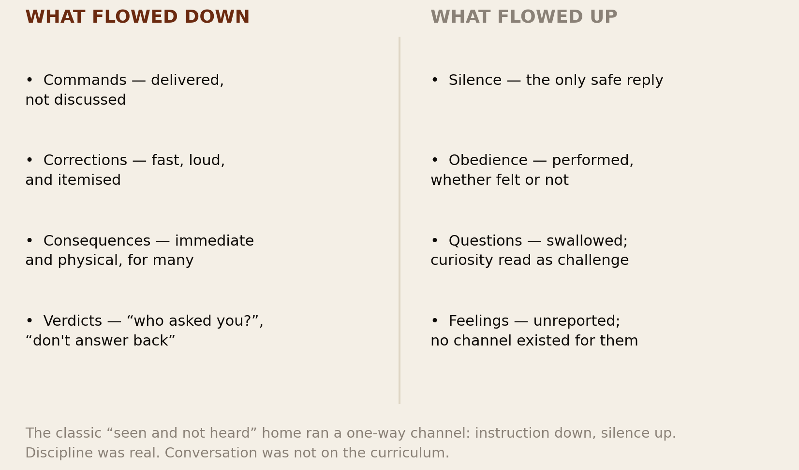
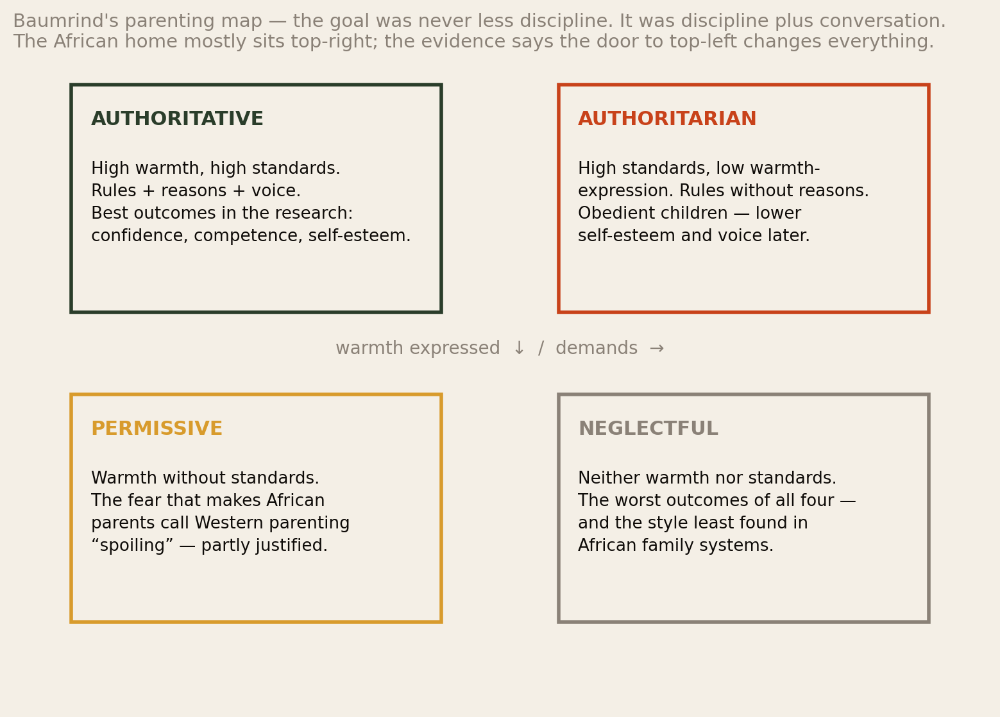
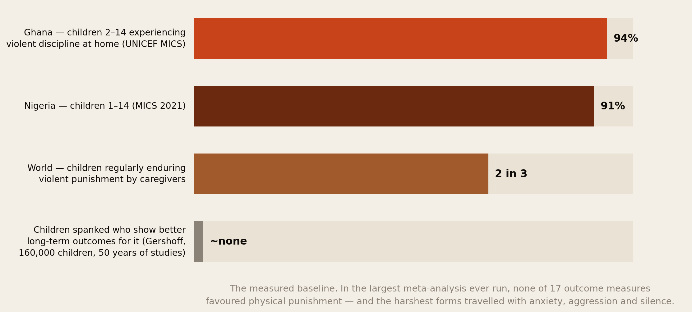
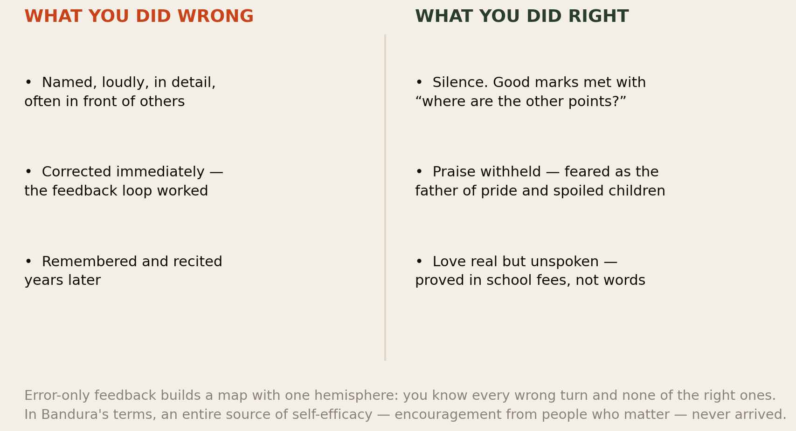
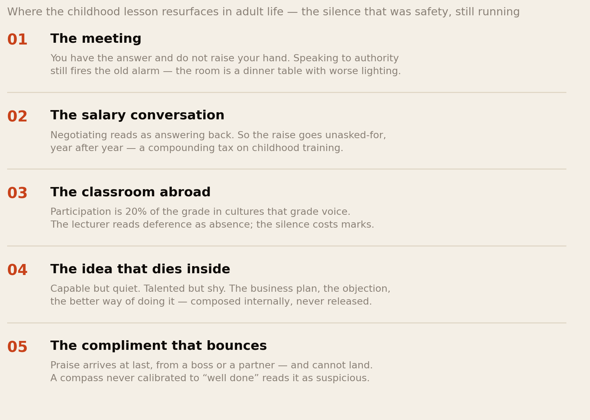
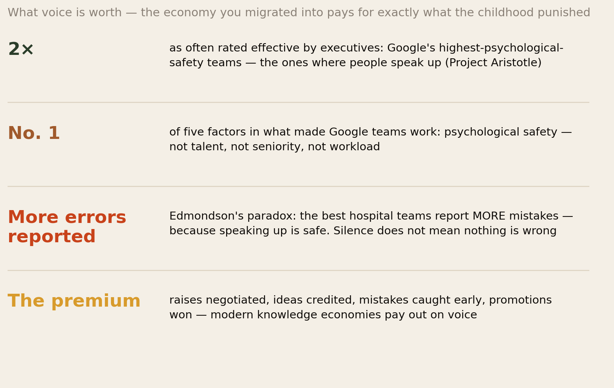
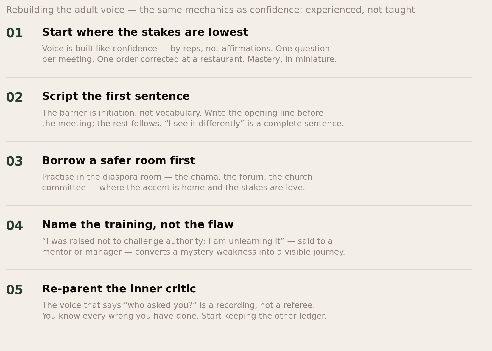
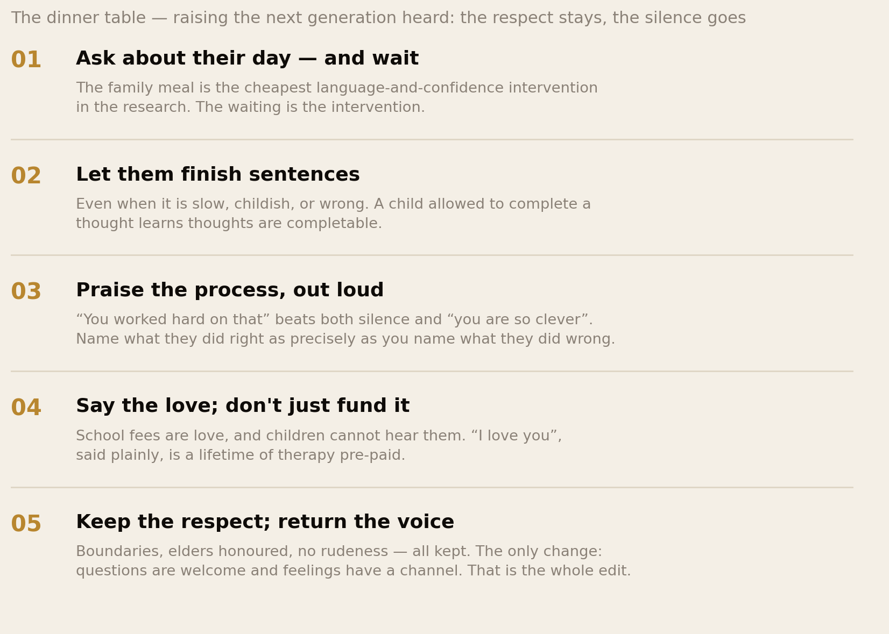

Seen and Not Heard.
Many of us were raised to be quiet. It worked — maybe too well. “Don’t talk when adults are talking.” “Never answer back.” A silent child was a disciplined child, and the goal was respect. But the discipline ran one way — commands and consequences, no conversation — and the side effects show up decades later, in meetings and marriages and salary negotiations, in adults who are capable but quiet, talented but shy, full of ideas they never say out loud. This report is about that upbringing: what it built, what it cost, what it got right — and how the respect stays while the silence goes.
Section 01The Short Version
This report began as a few paragraphs shared inside this network that hit a nerve: we knew exactly what we did wrong, and never learned what we did right. The response told us it was not one family’s story. So we did what this library does — took the lived observation to the research, and reported back honestly.
- The upbringing is real and near-universal. The one-way home — instruction down, silence up — is the documented default across much of the continent and its diaspora: UNICEF surveys find 9 in 10 children in Nigeria and Ghana experience violent discipline, and researchers consistently classify African and African-diaspora parenting as high-control, low-negotiation. Obedience was the product, and the product shipped.
- The side effects are the ones the essay named. Sixty years of parenting research, from Baumrind onward, finds discipline-without-conversation produces obedient children who score lower on self-esteem, social confidence and assertiveness — while discipline-with-conversation (the “authoritative” style) produces the confident, competent adults every parent was aiming for all along. The variable was never the rules. It was the voice.
- “You cannot build confidence on nothing” is literally what the science says. Our confidence report mapped Bandura’s sources of self-belief: doing things, seeing people like you do things, being told by people who matter that you are doing well, and a calm nervous system. The silent home cancelled the third source entirely and, where the cane ruled, the fourth too. Error-only feedback builds a compass with one hemisphere.
- The lesson does not expire at eighteen — and abroad it compounds. The economies the diaspora moved into pay out on exactly what the childhood punished: Google’s own research found psychological safety — the freedom to speak up — the number-one factor in team performance, and its safest teams were rated effective twice as often. The meeting is a dinner table with worse lighting, and the old rule still runs.
- The fix is not Western permissiveness. The evidence-backed target keeps everything our parents actually valued — boundaries, respect, standards — and changes one thing: the channel opens both ways. Confidence is not taught; it is experienced, one completed sentence at a dinner table at a time. The respect stays. The silence goes.
A silent child was called a disciplined child. Nobody asked what the silence was practising for.
Section 02The House Rules

Describe the system plainly, because most of us have never seen it written down — we just lived inside it. In the classic African home, a child’s standing orders were clear: be quiet around adults, do as told, never answer back. Greetings were mandatory and scripted; opinions were not solicited; questions beyond a certain line were insolence. When adults spoke, you left the room or became furniture. You were there to be seen, not heard — and a child who mastered the art was praised to other parents as disciplined, the highest compliment the system issued.
The feedback architecture matters as much as the silence. Mistakes were corrected fast — loudly, specifically, often physically, sometimes publicly. But good behaviour, good marks, good work? Silence — or the famous audit: where are the other points? Love was real and enormous, but it was proved in school fees, sacrifice and food, almost never in words. The system was not lazy and not loveless; it was a deliberate technology with a clear goal — respect, obedience, humility, survival — and by its own metrics it worked. The question this report asks is the one the essay asked: what else did it build, that nobody ordered?
Section 03An English Proverb in an African Mouth
Here is the twist this library keeps finding, from “African time” to the clock itself: the flag we defend as tradition is often an import. “Children should be seen and not heard” is an English proverb — recorded around 1450 in Mirk’s Festial, an Augustinian clergyman’s homilies (“A mayde schuld be seen, but not herd” — aimed, originally, at young women), and industrialised into child-rearing doctrine by the Victorians. It arrived in Africa the way the clock did: through the mission school, the colonial classroom and the cane — institutions explicitly designed to produce quiet, compliant subjects, which then handed the method to homes as modern discipline.
This matters because pre-colonial Africa was not, in fact, a continent of silent children. The ethnographic record shows societies that took the training of speech seriously in ways the Victorian model never did: evening riddling and story sessions where children performed and competed verbally; age-grade systems with formal oratory instruction; the palaver tradition, where matters were talked through at length under the tree; the griot lineages of West Africa, where eloquence was a hereditary profession of the highest status. Respect for elders was absolute — and it coexisted with structured, celebrated channels for young voices. The pure silence doctrine — no channel at all — is the colonial residue, not the ancestral inheritance. Which means retiring it is not abandoning culture. It is repatriating an older one.
Section 04The Parenting Map

Sixty years ago, psychologist Diana Baumrind drew the map this whole conversation lives on, with two axes: how much parents demand (rules, standards, discipline) and how much they respond (warmth expressed, reasons given, voice allowed). The crucial discovery was that these are independent dials — and the outcomes split accordingly. Authoritative homes (high demands and high responsiveness — rules with reasons, discipline with conversation) reliably produce the most confident, competent, socially skilled adults in the literature. Authoritarian homes (high demands, closed channel) produce exactly what ours advertised: obedient, proficient children — who score lower on happiness, social competence and self-esteem, and in several studies show no gain in assertiveness at all. Permissive homes (warmth, no standards) — the “spoiled” children African parents point at — genuinely do underperform authoritative ones. And neglectful homes do worst of all.
Read the map carefully and it dissolves the false choice that has run a thousand diaspora arguments. African parents looking at Western permissiveness and refusing it are right — that quadrant fails too. But the alternative to permissiveness was never silence; it was the top-left box: every rule kept, every standard kept, plus reasons, plus a channel up. One honest caveat belongs here and in Method: research on African, African-American and immigrant families shows the authoritarian style’s harm profile is moderated by context — where strictness is normative and clearly bonded to love and protection, children often read it as care, and outcomes are less negative than in white Western samples. The old way was not poison. It was simply — as the evidence keeps saying — not the best version of itself.
Section 05The Measured Baseline

How common is the harder edge of this system? UNICEF’s household surveys measure “violent discipline” — physical punishment and/or psychological aggression in the past month — and the numbers are not subtle: 94% of Ghanaian children aged 2–14 and 91% of Nigerian children aged 1–14 in the most recent rounds, with most of the continent’s surveyed countries in the same band; worldwide, two in three children — 1.6 billion — regularly experience violent punishment at home. This is not an African peculiarity; it is a global norm at its global strongest. And on outcomes, the largest analysis ever conducted — Gershoff and Grogan-Kaylor’s review of five decades and 160,000 children — found that of 17 measured outcomes, not one favoured physical punishment: the associations ran toward more aggression, more anxiety, worse mental health and lower self-esteem, in a dose-dependent pattern.
Two honest notes, because this library does not preach. First, most of these associations are correlational; researchers debate effect sizes, and the moderating role of cultural context (Section 04) is real. Second — and more important for this report — the cane is not even the core of the story. The essay’s deepest claim was about the silence: the missing praise, the closed channel, the one-hemisphere compass. A home can retire the stick and keep the silence — many modern African homes have — and the confidence machinery of the next section stays broken. That is why the fix in Sections 11–12 is about conversation, not just punishment.
Section 06The Compass That Never Formed

Now the mechanism, because the essay’s central line — we grew up with no compass — is not a metaphor; it is a precise description of a broken feedback system. Learning requires two signals: stop that and more of that. The one-way home transmitted the first at full volume and the second at zero. The result is an adult who can recite every childhood failing verbatim decades later — and who genuinely does not know what they are good at, because no authoritative voice ever told them. Skills existed; the signal confirming them never arrived.
Our confidence report gives this a formal frame. Bandura’s research identified four sources that build self-efficacy: mastery experiences (doing things), vicarious experience (watching people like you do things), verbal persuasion (credible people telling you that you can), and physiological state (a calm enough body to perform). Audit the silent home against the list: mastery existed but went unconfirmed — a win nobody names does not update your self-belief; verbal persuasion was structurally absent — praise was feared as the fertiliser of pride; and where discipline was harsh, the physiological channel ran on vigilance. Three of four sources, cancelled or crippled. The essay said it in one line and the literature says it in three thousand papers: confidence is not taught, it is experienced — and an experience that is never reflected back might as well not have happened. You cannot build confidence on nothing.
Section 07The Lesson That Doesn’t Expire

A child’s brain is a pattern-learning machine, and the pattern it learned was clean: your voice causes problems; silence keeps you safe. Speaking up was answering back. Asking questions was disrespect. Every data point confirmed it, for eighteen consecutive years, from the people you loved most. That is not a habit; that is training — and training does not check your passport or your birthday before running.
So look at where it resurfaces. The meeting where you have the answer and do not raise your hand — because a room with authority in it is a dinner table with worse lighting. The salary negotiation that never happens, because negotiating with a superior still feels like answering back — a compounding tax our careers research keeps finding in diaspora pay gaps. The seminar abroad where participation is a fifth of the grade and the lecturer marks your respectful silence as absence. The ideas — the objection, the business, the better way — composed fully, internally, and never released. And the strangest one: the compliment that bounces. When praise finally arrives, from a boss or a partner, the uncalibrated compass reads it as suspicious — flattery, or a mistake. Adults who never heard “well done” at seven do not automatically believe it at thirty-seven; some spend adulthood searching for the feeling, some distrust it on arrival, and the shame machinery polices the whole arrangement from behind.
Speaking up was punished at seven, so it is impossible at thirty-seven. The lesson was learned perfectly. That was the problem.
Section 08What Voice Is Worth Abroad

Here is why this is an economics report and not only a wounds report. The knowledge economies the diaspora moved into have spent two decades measuring what makes people and teams valuable, and the answer keeps coming back as the exact thing the silent childhood punished. When Google studied 180 of its own teams (Project Aristotle), the number-one predictor of performance was not talent, seniority or workload — it was psychological safety: whether members felt safe to speak up, ask questions, admit confusion and challenge ideas. Teams high on it were rated effective twice as often by executives, retained people better and produced more. Amy Edmondson’s founding research carries the sharpest version: the best hospital teams reported more errors than the worst — not because they made more, but because speaking up was safe. Silence does not mean nothing is wrong. It means nobody is saying it — a sentence every graduate of the one-way home can verify from childhood.
Now stack the diaspora’s position. The market pays for voice — ideas credited, raises negotiated, mistakes flagged early, promotions argued for. The childhood trained its opposite. And the CV research shows we start with a discount that only advocacy can claw back — the one skill the training withheld. This is the essay’s hardest sentence made measurable: success today depends on being confident, outspoken and willing to challenge — the exact opposite of what we were taught. Not because the West is right about everything, but because that is the tariff structure of the economy we chose to work in.
Section 09What the Old Way Got Right
Before the rebuild, the defence — because this report is not an indictment of African parents, and the evidence will not support one. The old system got real things right, and the research agrees:
- The standards were a gift. High expectations are half of the winning quadrant — the half Western permissiveness threw away. The diaspora’s academic overperformance did not come from nowhere; it came from homes where excellence was assumed, not requested.
- The respect trained something valuable. Deference done right is attention — the listening, the reading of rooms, the honouring of experience — and our focus report showed what that relational attention is worth professionally. Cultures that train only self-expression produce meetings full of talkers and empty of listeners; ask anyone who has sat in one.
- The love was real, and the sacrifice was its language. Parents who never said “I love you” paid it in night shifts and school fees for decades. The channel was wrong; the signal was enormous. Any honest accounting — and any conversation you have with your own parents about this — starts there.
- And the context was survival. A generation raised under colonial administrators, apartheid police or predatory states taught silence because for them, a mouthy child was in danger — and for Black parents abroad, “the talk” still teaches exactly this calculus with authority today. The silence was not ignorance. It was armour, sized for a world the parents knew. The question is only whether the armour still fits the world the child actually lives in.
Section 10Rebuilding the Adult Voice

If you were the child in this report, the repair follows the same mechanics as the confidence rebuild, because it is the same machinery: voice is re-learned by experience, in graded doses, with witnesses. Start where the stakes are lowest — one question per meeting, one corrected order at a restaurant, one “I see it differently” per week: mastery experiences, in miniature, each one a data point against eighteen years of the old dataset. Script the first sentence before the meeting — the barrier is initiation, not vocabulary. Practise in safer rooms first: the chama, the church committee, this Forum — spaces where the accent is home and a stumble costs nothing (this is, concretely, half of what a diaspora network is for). Name the training out loud to a mentor or manager — “I was raised not to challenge authority; I’m unlearning it” converts a mystery weakness into a visible journey, and managers respond to journeys. And re-parent the inner critic: the voice that still says who asked you? is a recording, not a referee. You have kept the ledger of everything you did wrong since childhood. Start keeping the other one.
Section 11The Dinner Table

For the next generation, the intervention is almost embarrassingly cheap, and it starts exactly where the essay put it: the dinner table. The family-meal literature is one of developmental psychology’s quiet treasures — regular mealtime conversation tracks with children’s vocabulary, school performance, emotional regulation and later mental health, and the active ingredient is not the food. It is the turn: the child asked about their day, and — this is the intervention — waited for. Let them finish sentences, even slow, childish, wrong ones; a child allowed to complete a thought learns that thoughts are completable, and that their voice does not cause problems. Ask what they think, what they value, how they feel — and receive it without a verdict.
Then fix the feedback ledger. Praise the process, precisely and out loud — “you worked hard at that”, “you kept trying” — which the motivation research (Dweck and successors) finds builds persistence where person-praise (“you’re so clever”) builds fragility, and where silence builds the one-hemisphere compass. Name what they did right as specifically as our parents named what we did wrong. When they attempt hard things, tell them it gets easier — because it does, and a credible adult saying so is Bandura’s third source, delivered. Tell them you love them, in words, and hug them; school fees are love, but children cannot hear them. A child who feels loved does not spend adulthood searching for that feeling — or paying therapists and partners to supply the missing sentence.
Section 12The Second Generation
For diaspora parents this is not a philosophical question; it is Tuesday. Your child is being raised between two grammars — a school that grades hands-up assertiveness, and a home (plus a WhatsApp of aunties, plus summer trips home) that grades deference. Handled by accident, the collision produces the worst of both: children who learn their parents’ culture as the thing that silences them, and the host culture as the thing their parents fear — the dynamic behind half the conflicts in the research on African immigrant families, where parents describe children as “not controllable because they follow Western values”. Handled on purpose, the same collision is an inheritance: a child fluent in both grammars — respectful and heard, able to honour an elder at the table and challenge a professor in the seminar, code-switching between deference and assertiveness the way they switch languages.
The evidence-backed recipe is the one this whole report has been building: authoritative, bicultural, explicit. Keep the standards and the respect — children of immigrants do better with firm structure, and the research on ethnic-minority families says the warmth-plus-strictness blend lands well when the love is loud. Open the channel — questions welcome, feelings speakable, reasons given. And narrate the two grammars out loud: “at Shangazi’s house we greet first and let elders finish; at school, raise your hand and argue your point — both are respect, in different languages.” A child told the rules of both rooms owns both rooms. This is the generational point the essay ended on: the foundation is not only for the child. It is for the generation that comes from that child — the first one raised with the respect and the voice, instead of a forced choice between them.
Section 13The Uncomfortable Part
First: we are not just survivors of this system; we are its current operators. The reflex that hushes a child mid-sentence at a family gathering, the “who asked you?” deployed on a nephew, the pride we still feel when someone calls our quiet child “so disciplined” — the system runs on us now. It is comfortable to write about our parents; the report only matters if it reads as a mirror. The test is small and brutal: the next time a child in your orbit interrupts adults with something to say, watch what you do before you think.
Second: blaming our parents is a dead end — and so is pretending nothing happened. They ran the software they were given, under conditions — colonial schools, hard states, dangerous streets — where it was rational, and they paid for our lives with theirs. Both things are true: they did their best, and some of what they did left marks. The mature position holds both without flinching — gratitude without amnesia, honesty without prosecution. Some of us may even have the conversation with them; most of us will settle it privately. Either way, the account is settled by what we do at our own tables, not by what we relitigate at theirs.
Third: the goal is voice, not noise. If we overcorrect into the cult of self-expression — every feeling broadcast, every thought a take, confidence performed at all times — we will have traded a silence problem for a listening problem, and the cultures we moved to are drowning in that one. The old system’s deepest value, underneath the distortion, was that speech is weighty and other people matter. Keep that. The child we are trying to raise — and the adult we are trying to become — is not the loudest in the room. It is the one who can speak when it counts, stay silent by choice rather than by training, and tell the difference. That is what “the respect stays, the silence goes” actually means.
Section 14Method & Limits
This report combines parenting research, cross-cultural developmental psychology, survey data on child discipline and organisational research on voice, as at 2 September 2026.
- This report began as a member essay shared inside this network; its argument structure and several of its lines are retained deliberately. The research was gathered to test the essay’s claims, not to decorate them — and where the evidence complicated them (see below), we have said so.
- The parenting-styles literature (Baumrind onward) is one of developmental psychology’s largest, but it is heavily correlational — parenting is not randomly assigned — and dominated by Western samples. The authoritative-style advantage is among its most consistent findings; exact effect sizes vary.
- The cultural-moderation caveat is real and stated in the text: studies of African, African-American and immigrant families find authoritarian-style parenting less harmful — sometimes neutral on some outcomes — where it is normative and embedded in evident love and protection. Our claim is therefore not that the old way broke everyone; it is that the evidence points to a better version that keeps its strengths. We believe that reading is fair to both the science and our parents.
- The UNICEF figures (Ghana 94%, Nigeria 91%, world 2-in-3) measure “violent discipline” — physical punishment and/or psychological aggression in the past month, by caregiver report (MICS). They are prevalence measures, not severity measures, and country rounds differ in year.
- The Gershoff & Grogan-Kaylor meta-analysis (2016; 50 years, ~160,000 children) is the largest on physical punishment; its associations are robust in direction, debated in magnitude, and largely correlational. We report it as the balance of evidence, which it is.
- The organisational-voice research (Edmondson’s psychological safety; Google’s Project Aristotle) measures teams in specific corporate and clinical settings; we use it to establish that modern knowledge economies reward voice, not as a universal law of workplaces.
- The historical section rests on the documented English origin of the proverb (Mirk’s Festial, c. 1450) and the ethnographic record of African oral and oratory traditions; the claim that the pure silence doctrine is substantially a colonial-era import is our synthesis of that record, labelled as argument. Pre-colonial practices varied enormously across the continent and included their own strong deference norms.
- Sections 06–08’s application to diaspora adults is interpretive — no study has traced “seen and not heard” childhoods into diaspora salary negotiations directly. The mechanisms (feedback learning, Bandura’s sources, trained avoidance) are established; the join is ours.
- Nothing here is clinical advice. Where childhood discipline crossed into abuse, or where its echoes are heavy — anxiety, depression, relationships that keep replaying the old house — a professional conversation is not a luxury, and having one is a break with the silence, not a betrayal of anyone.
Principal sources: the parenting-styles literature from Baumrind (1966) onward; UNICEF MICS violent-discipline data including Ghana and Nigeria rounds; Gershoff & Grogan-Kaylor (2016) on physical punishment; Bandura (1977) on the sources of self-efficacy; Dweck’s research on process versus person praise; Edmondson (1999) on psychological safety and Google’s Project Aristotle; research on African immigrant parenting; the documented origin of the proverb in Mirk’s Festial (c. 1450); family-mealtime research on child language and wellbeing.
Companion reports: The Most Optimistic People on Earth, What Will People Say?, Three Generations to Silence, Navigating Cultural Identity and Honest Questions: Mental Health.
The diaspora helps the diaspora.
Africa Global Forum is a peer network for Africans abroad — help each other, sit together, and bounce ideas. This research is part of an open library, free to read and share.